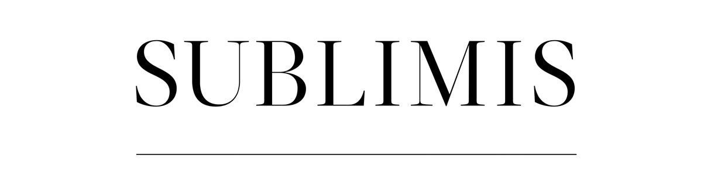

|  | About | Sublimis exhibition |
AboutDe obsolescentia is an interactive art installation made by Catodo and Giuseppe La Spada. We live in times that impose a rapid decline of the image, information, and emotion. This self-imposed or auto-produced noise overshadows everything that is not close to us; the decomposition process starts simultaneously to fruition. The user is invited to alter the images using the mouse, accelerating the degradation of the pixels. A virtual rubbing that plays with passing time, interpreted as dislocation of the image points. This artwork has been presented at La Triennale of Milan (Italy) during the Sublimis exhibition of Giuseppe La Spada. Credit: |